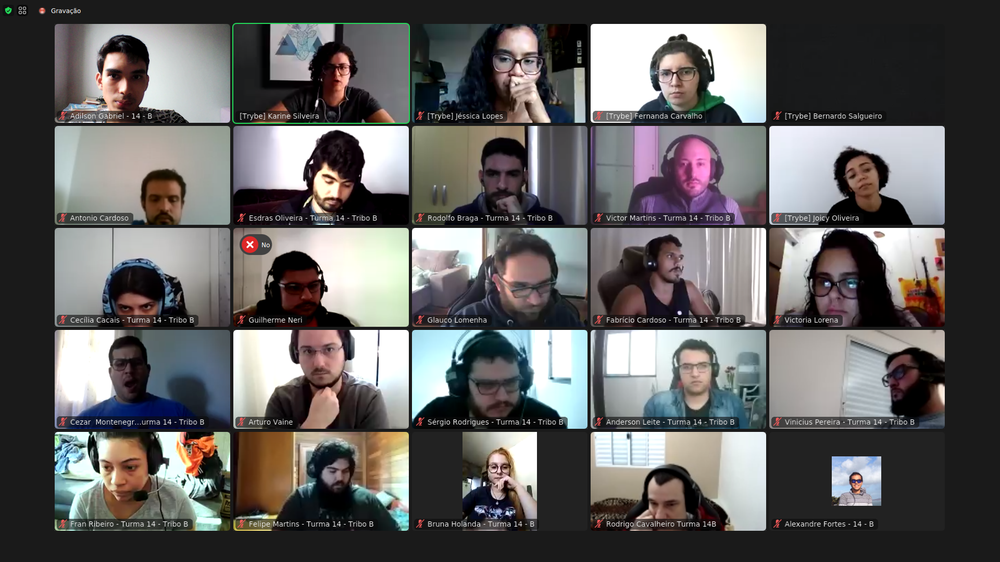

Meu aprendizado
Nessas 2 primeiras semanas estudando na Trybe, mesmo já tendo uma base de conhecimentos, eu aprendi a usar o terminal e seus comandos, como usar o Git e o GitHub, a importância de tags semânticas em HTML, e um melhor entendimento sobre posição de objetos com CSS.
